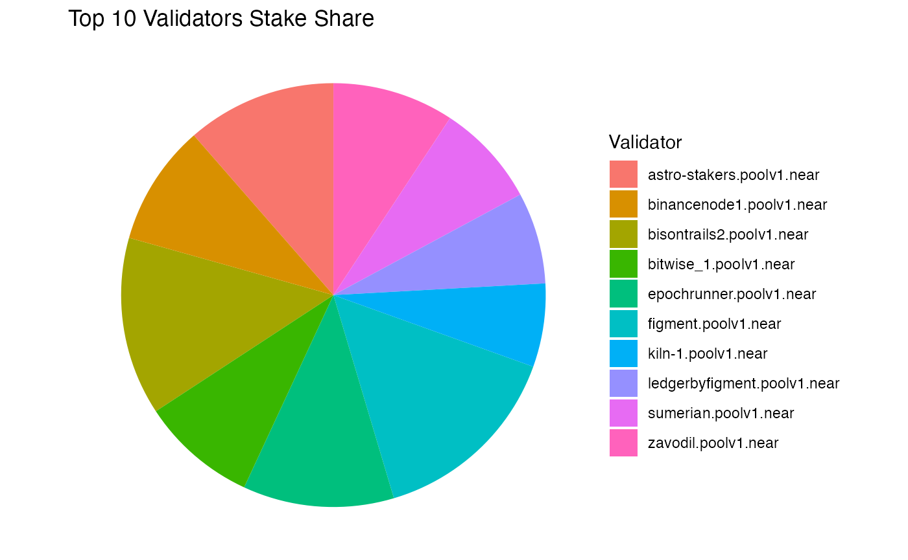
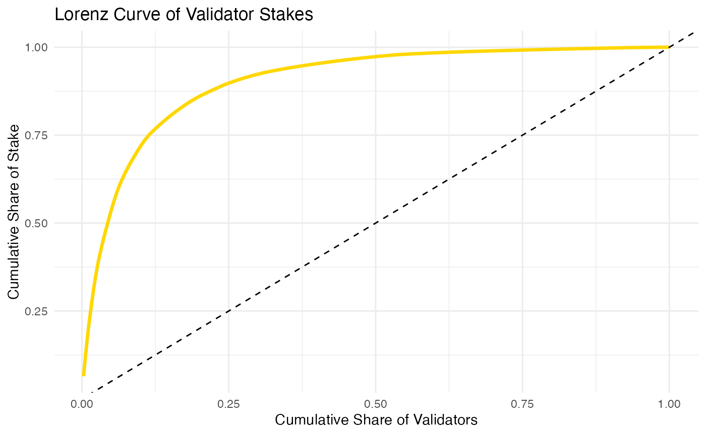
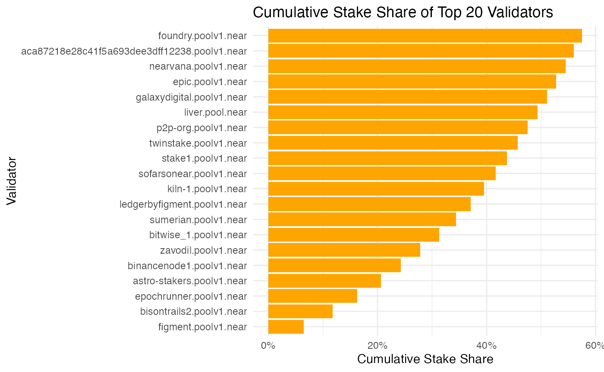

Introduction
nearjsonrpc provides small, focused wrappers around the NEAR Protocol JSON-RPC API. The goal is to make it easy to query account state, blocks, network status, transactions and call view functions from reproducible R scripts.
Setup
Set the endpoint:
near_set_endpoint('mainnet')## ✔ NEAR RPC endpoint set to <https://rpc.mainnet.near.org>Examples
Query Acount Details and Balance
near_query_account("vitalik.near")## # A tibble: 1 × 8
## account_id amount locked storage_usage code_hash block_height block_hash
## <chr> <chr> <chr> <int> <chr> <int> <chr>
## 1 vitalik.near 546329351… 0 358058 55E7imni… 176807300 46FeTb2PC…
## # ℹ 1 more variable: raw_response <list>List all access keys associated with a NEAR account
keys = near_get_access_keys("vitalik.near")
keys## # A tibble: 7 × 5
## public_key access_key block_height block_hash raw_response
## <chr> <list> <int> <chr> <list>
## 1 ed25519:5a4CCWCJrnMGxSVtjMp… <named list> 176807301 BPVhFrby6… <named list>
## 2 ed25519:6EBwyCYEjH1VsjJSUQo… <named list> 176807301 BPVhFrby6… <named list>
## 3 ed25519:77oj7oJGG3AoeRaKaAF… <named list> 176807301 BPVhFrby6… <named list>
## 4 ed25519:7CH3JEY5abPhVcdPQxg… <named list> 176807301 BPVhFrby6… <named list>
## 5 ed25519:9ePBRZ3W1RpUKsaErip… <named list> 176807301 BPVhFrby6… <named list>
## 6 ed25519:Dr9NjCcEMvXEjECaJ9t… <named list> 176807301 BPVhFrby6… <named list>
## 7 ed25519:DyijRtwLRrSysLAgEAn… <named list> 176807301 BPVhFrby6… <named list>##
## Attaching package: 'dplyr'## The following objects are masked from 'package:stats':
##
## filter, lag## The following objects are masked from 'package:base':
##
## intersect, setdiff, setequal, union##
## Attaching package: 'purrr'## The following object is masked from 'package:nearjsonrpc':
##
## %||%##
## Attaching package: 'rlang'## The following objects are masked from 'package:purrr':
##
## %@%, flatten, flatten_chr, flatten_dbl, flatten_int, flatten_lgl,
## flatten_raw, invoke, splice## The following object is masked from 'package:nearjsonrpc':
##
## %||%
keys = near_get_access_keys("vitalik.near")
library(dplyr)
library(purrr)
library(tidyr)
library(rlang)
# Flatten raw_response into a dataframe
all_keys_df <- map_dfr(keys$raw_response, function(resp) {
# Some elements may not have $keys
if (!is.null(resp$keys)) {
map_dfr(resp$keys, function(k) {
ak <- k$access_key
pk <- k$public_key %||% NA_character_
if (is.list(ak) && "FunctionCall" %in% names(ak$permission)) {
fc <- ak$permission$FunctionCall
tibble(
block_hash = resp$block_hash %||% NA_character_,
block_height = resp$block_height %||% NA_integer_,
public_key = pk,
nonce = ak$nonce,
allowance = fc$allowance %||% NA_character_,
method_names = if (length(fc$method_names) > 0) paste(fc$method_names, collapse = ", ") else NA_character_,
receiver_id = fc$receiver_id,
permission_type = "FunctionCall"
)
} else {
tibble(
block_hash = resp$block_hash %||% NA_character_,
block_height = resp$block_height %||% NA_integer_,
public_key = pk,
nonce = ak$nonce,
allowance = NA_character_,
method_names = NA_character_,
receiver_id = NA_character_,
permission_type = "FullAccess"
)
}
})
} else {
tibble(
block_hash = NA_character_,
block_height = NA_integer_,
public_key = NA_character_,
nonce = NA_integer_,
allowance = NA_character_,
method_names = NA_character_,
receiver_id = NA_character_,
permission_type = NA_character_
)
}
})
all_keys_df## # A tibble: 49 × 8
## block_hash block_height public_key nonce allowance method_names receiver_id
## <chr> <int> <chr> <dbl> <chr> <chr> <chr>
## 1 5xFwaNhLG… 176807303 ed25519:5… 1.4 e 1 23318196… add_request… vitalik.ne…
## 2 5xFwaNhLG… 176807303 ed25519:6… 1.5 e 1 NA add_request… vitalik.ne…
## 3 5xFwaNhLG… 176807303 ed25519:7… 0 25000000… NA claim-toke…
## 4 5xFwaNhLG… 176807303 ed25519:7… 5.24e13 25000000… NA launchpad.…
## 5 5xFwaNhLG… 176807303 ed25519:9… 3.1 e 1 NA confirm vitalik.ne…
## 6 5xFwaNhLG… 176807303 ed25519:D… 5.24e13 24755542… add_request… vitalik.ne…
## 7 5xFwaNhLG… 176807303 ed25519:D… 3 e 0 NA NA NA
## 8 5xFwaNhLG… 176807303 ed25519:5… 1.4 e 1 23318196… add_request… vitalik.ne…
## 9 5xFwaNhLG… 176807303 ed25519:6… 1.5 e 1 NA add_request… vitalik.ne…
## 10 5xFwaNhLG… 176807303 ed25519:7… 0 25000000… NA claim-toke…
## # ℹ 39 more rows
## # ℹ 1 more variable: permission_type <chr>Get Current Network Status and Node Info
status = near_network_status()
status## # A tibble: 1 × 8
## chain_id latest_block_height latest_block_hash syncing version
## <chr> <int> <chr> <lgl> <chr>
## 1 mainnet 176807307 9gFGkPJBjjkkt3mvApxCqNuKoqz7zLjT… FALSE 2.10.2
## # ℹ 3 more variables: protocol_version <int>, validators <list>,
## # raw_response <list>Get NEAR Protocol Configuration
protocol_config = near_get_protocol_config()
protocol_config## # A tibble: 1 × 5
## block_height block_hash config runtime_config raw_response
## <int> <chr> <list> <list> <list>
## 1 NA NA <named list [33]> <named list [6]> <named list [33]>View NEAR Smart Contract
FT Metadata
near_call_view_function("wrap.near", "ft_metadata")## # A tibble: 1 × 9
## account_id method_name result_raw result_text result_json logs block_height
## <chr> <chr> <list> <chr> <list> <list> <int>
## 1 wrap.near ft_metadata <raw> "{\"spec\"… <named list> <list> 176807306
## # ℹ 2 more variables: block_hash <chr>, raw_response <list>Total supply
near_call_view_function("wrap.near", "ft_total_supply")## # A tibble: 1 × 9
## account_id method_name result_raw result_text result_json logs block_height
## <chr> <chr> <list> <chr> <list> <list> <int>
## 1 wrap.near ft_total_su… <raw [34]> "\"1880875… <chr [1]> <list> 176807307
## # ℹ 2 more variables: block_hash <chr>, raw_response <list>Balance query
near_call_view_function("wrap.near", "ft_balance_of",
args = list(account_id = "vitalik.near"))## # A tibble: 1 × 9
## account_id method_name result_raw result_text result_json logs block_height
## <chr> <chr> <list> <chr> <list> <list> <int>
## 1 wrap.near ft_balance_… <raw [3]> "\"0\"" <chr [1]> <list> 176807307
## # ℹ 2 more variables: block_hash <chr>, raw_response <list>Data analysis
Top validators based on stakes
##
## Attaching package: 'scales'## The following object is masked from 'package:purrr':
##
## discard
# Get recent validator stakes
vals <- near_get_validators()
vals %>%
slice_head(n = 10) %>%
ggplot(aes(x = reorder(account_id, stake_near), y = stake_near)) +
geom_col(fill = "steelblue") +
coord_flip() +
scale_y_continuous(labels = comma) + # makes stake readable with commas
labs(
title = "Top 10 Validators by Stake",
x = "Validator",
y = "Stake (NEAR)"
) +
theme_minimal()
Distribution of States (Major of the validators few Stakes)
vals %>%
ggplot(aes(x = stake_near)) +
geom_histogram(bins = 30, fill = "darkgreen", color = "white") +
scale_x_continuous(labels = scales::comma) +
labs(
title = "Distribution of Validator Stakes",
x = "Stake (NEAR)",
y = "Number of Validators"
) +
theme_minimal()
Stake Share by Validator (Pie Chart)
vals %>%
slice_max(order_by = stake_near, n = 10) %>%
ggplot(aes(x = "", y = stake_near, fill = account_id)) +
geom_col(width = 1) +
coord_polar(theta = "y") +
scale_y_continuous(labels = scales::comma) +
labs(
title = "Top 10 Validators Stake Share",
fill = "Validator"
) +
theme_void()
Concentration Index (Lorenz Curve)
Show how concentrated stake is among validators
vals %>%
arrange(desc(stake_near)) %>%
mutate(cum_stake = cumsum(stake_near) / sum(stake_near),
cum_validators = row_number() / n()) %>%
ggplot(aes(x = cum_validators, y = cum_stake)) +
geom_line(color = "gold", size = 1.2) +
geom_abline(slope = 1, intercept = 0, linetype = "dashed") +
labs(
title = "Lorenz Curve of Validator Stakes",
x = "Cumulative Share of Validators",
y = "Cumulative Share of Stake"
) +
theme_minimal()## Warning: Using `size` aesthetic for lines was deprecated in ggplot2 3.4.0.
## ℹ Please use `linewidth` instead.
## This warning is displayed once every 8 hours.
## Call `lifecycle::last_lifecycle_warnings()` to see where this warning was
## generated.
Bar Plot of Stake Concentration
vals %>%
arrange(desc(stake_near)) %>%
mutate(cum_share = cumsum(stake_near) / sum(stake_near)) %>%
slice_head(n = 20) %>%
ggplot(aes(x = reorder(account_id, cum_share), y = cum_share)) +
geom_col(fill = "orange") +
coord_flip() +
scale_y_continuous(labels = scales::percent) +
labs(
title = "Cumulative Stake Share of Top 20 Validators",
x = "Validator",
y = "Cumulative Stake Share"
) +
theme_minimal()
The result indicates that validator stakes are highly concentrated. A small number of validators control the majority of the total stake. The network is therefore less decentralized in terms of stake distribution.
Get Block Information
Latest block
near_get_block("final")## # A tibble: 1 × 10
## height hash prev_hash timestamp author chunks_included gas_price
## <int> <chr> <chr> <dttm> <chr> <int> <chr>
## 1 176807328 GgCk… FcTf4vRH… 2025-12-14 13:40:33 dsrvl… 9 100000000
## # ℹ 3 more variables: total_supply <chr>, latest_protocol_version <int>,
## # raw_response <list>Block by hash
near_get_block("CanDKa6nYDQ89iv5U7sE1YDFteBRkBG6qBJjiM5YwGtY")## # A tibble: 0 × 10
## # ℹ 10 variables: height <int>, hash <chr>, prev_hash <chr>, timestamp <dttm>,
## # author <chr>, chunks_included <int>, gas_price <chr>, total_supply <chr>,
## # latest_protocol_version <int>, raw_response <list>